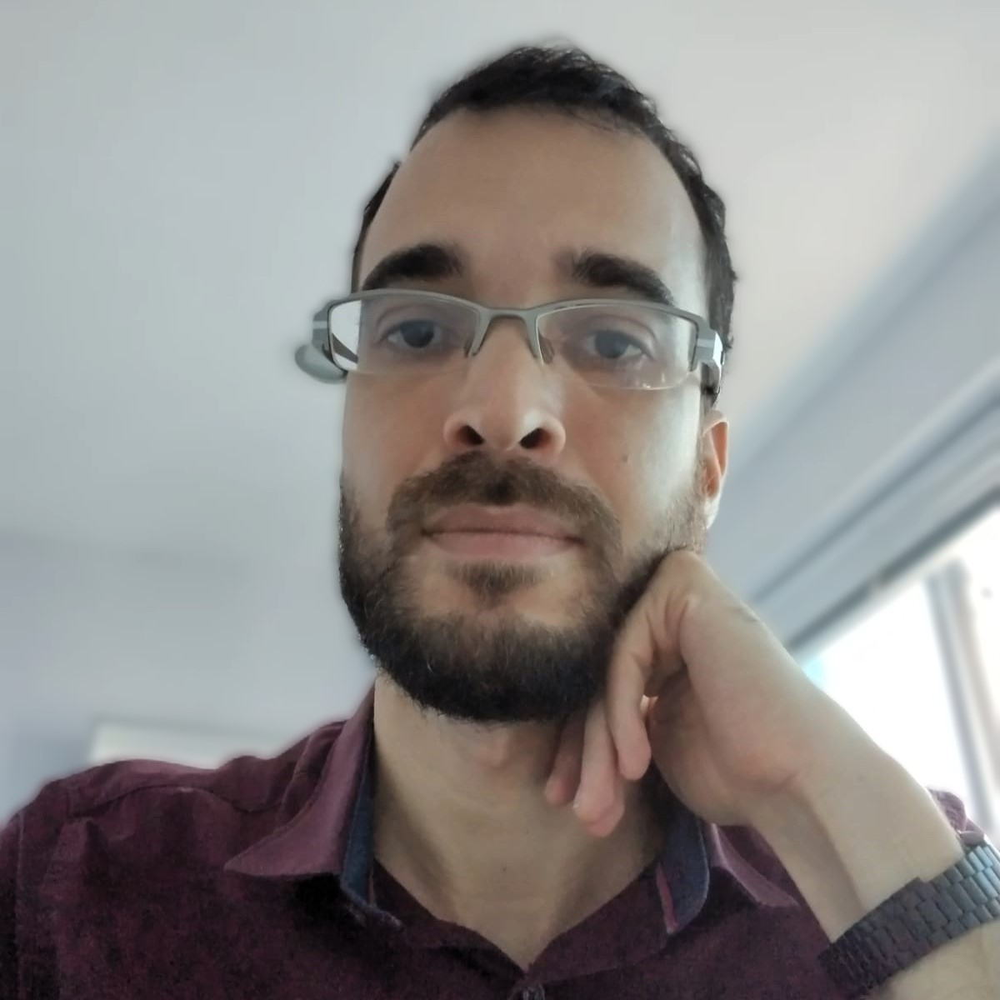

Sobre mim
Autonomia, compromisso, cooperação, empatia e honestidade são princípios que me norteiam na na vida e no trabalho.
Projetos
Códigos abertos - Scripts e aplicações clientside com código disponível no github.


Formação
Iniciei e sigo a jornada como programador autodidata. Atualmente estudo Analise e Desenvolvimento de Sistemas no SENAC. Essa é a minha segunda graduação, a primeira é em psicologia, concluída em 2009, na Faculdade Ruy Barbosa.